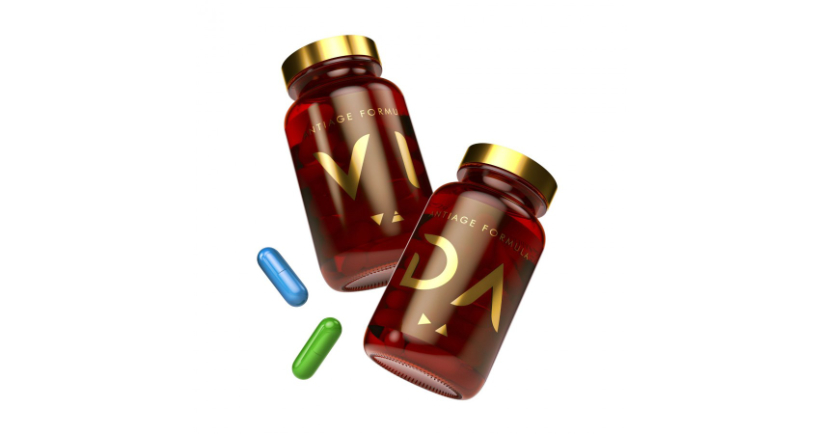
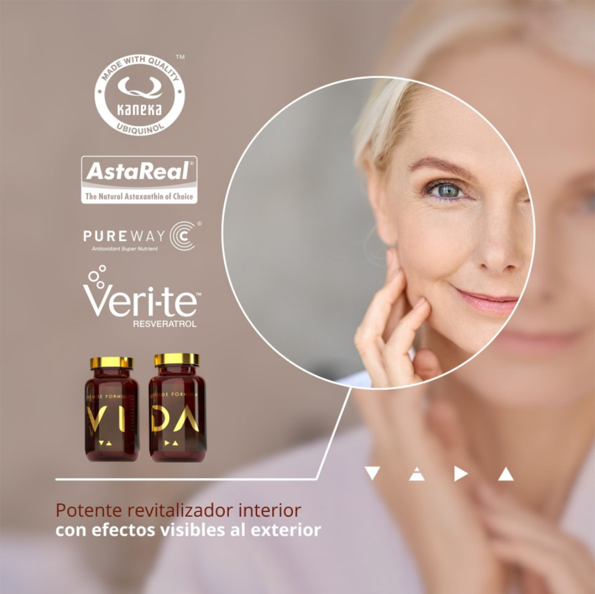

Nueva fórmula antiedad diseñada por Hypertrophy Nutrition y comercializada por Evolution Network
VIDA es la nueva fórmula avanzada en el cuidado antienvejecimiento. Su composición se ha diseñado específicamente para retrasar y combatir los signos de la edad fortaleciendo al organismo desde dentro y potenciando la salud y la belleza natural hacia fuera.
La medicina anti-age persigue reducir las consecuencias negativas que el paso del tiempo tiene sobre nuestras células, así como proporcionar las sustancias que las rejuvenezcan mediante técnicas y productos especialmente desarrollados para frenar el impacto que la polución, el estrés y la oxidación ejercen sobre nuestra piel.
Su innovador complejo de ingredientes con acción antiinflamatoria y antioxidante actúan en sinergia para reforzar al sistema inmunitario y prolongar la vida de las células, lo que logra un aspecto más radiante y una longevidad más saludable.
VIDA se presenta en 60 cápsulas divididas en dos frascos de cristal. Para mantener intactos los nutrientes de su formulación y garantizar así la efectividad de sus resultados, el producto se ha dividido en dos recipientes para: por un lado, preservar un tamaño menor de las cápsulas (una sola de mayor capacidad dificulta su consumo) y por otro, no reducir la cantidad de ingredientes de su dosis original (así no se perjudica ni a su potencial ni a la sinergia que se crea entre todos los principios activos).
Por tanto, la toma adecuada para apreciar su eficacia es de 2 cápsulas al día (una de cada tarrito) con abundante agua, solo así se asegura la ingesta total de nutrientes por dosis diaria recomendada.
Proin tempus feugiat sed varius enim lorem ullamcorper dolore aliquam aenean ornare velit lacus, ac varius enim lorem ullamcorper dolore.